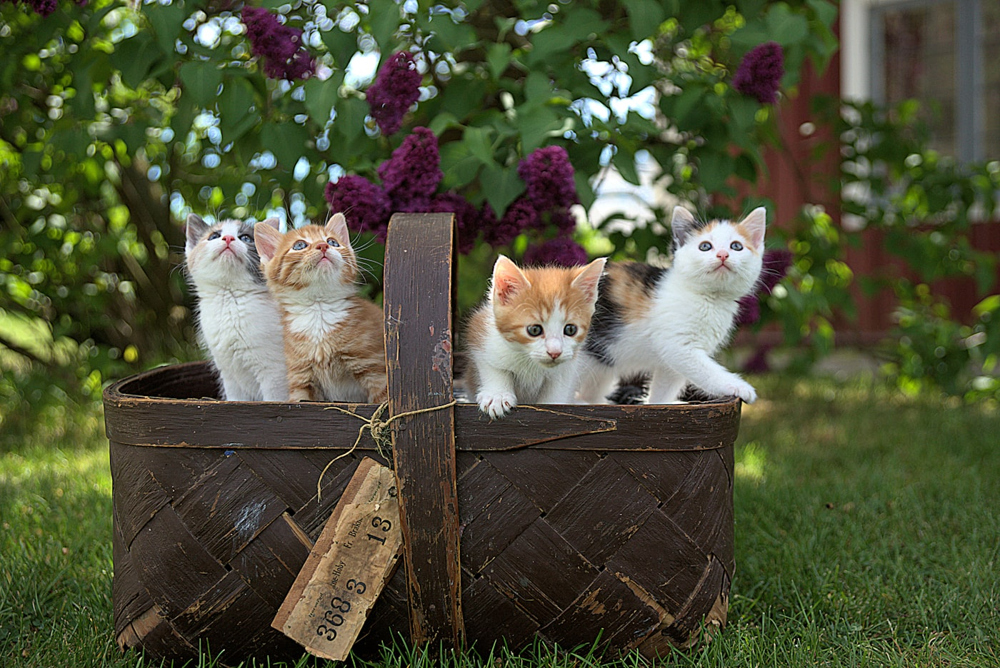
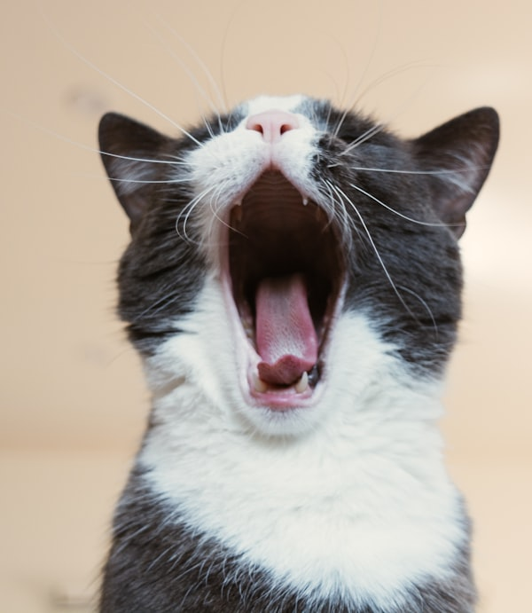

How PurrTwin Works
Here's how pet parents use PurrTwin to take control of their cat's health journey.

Step 1Build the health history
Create your cat’s profile and add diagnoses, medications, diets, veterinary records, laboratory results, previous symptoms, and important health events. PurrTwin organizes this information into a structured timeline.
- Upload veterinary records and laboratory results
- Record diagnoses, medications, and diet information
- Add previous symptoms and health events
- Include information from multiple clinics
Track everyday changes
Tell PurrTwin what you noticed using a short conversation, quick check-in, photo, or connected device. The system organizes observations such as appetite, drinking, litter-box behavior, vomiting, activity, mood, weight, and medication adherence.
- Symptom and behavior logs
- Photos and documents
- Optional sensor integrations

Step 3Understand and share
PurrTwin compares new observations with your cat’s history, displays longitudinal trends, and creates a concise summary of meaningful changes. Parents gain clarity, while veterinary teams receive a more organized account of what happened between visits.
- Personalized trend visualization
- Change-from-baseline summaries
- Medication and treatment-response timelines
- Questions to discuss with the veterinarian
- Downloadable vet-ready report
What your veterinarian sees
Turn everyday observations into a clear, organized summary that helps your veterinary team understand what has changed and what questions need attention.
Clinical snapshot
- Current concerns
- Recent changes
- Diagnoses and medications
- Important events
- Questions from the caregiver
Trends over time
- Appetite and weight
- Drinking and urination
- Symptoms
- Relevant laboratory values
- Diet or medication changes
- Disease progression
Frequently Asked Questions
Everything you need to know about getting started with PurrTwin.
What is a digital health twin?
A continuously updated health profile that combines your cat's history with new observations and clinical information.
Who is PurrTwin designed for?
Initially, owners of senior cats and cats with recurring or chronic conditions.
Does PurrTwin diagnose disease?
No. It organizes information and helps identify changes that owners can discuss with a veterinarian.
How much daily tracking is required?
The goal is a short conversational check-in, with more detailed logging only when something changes.
Can my veterinarian access the information?
Owners can generate and share a concise report. Direct clinic integrations are a future capability.
Is this meant to replace my vet?
Absolutely not. PurrTwin is a complementary tool designed to empower you with data you can share with your veterinarian. We help you spot trends early, but always consult your vet for medical diagnoses, treatment plans, or urgent health concerns. Think of PurrTwin as your cat's wellness co-pilot.
How do I access the interactive demo?
You can access the full interactive demo right now by visiting PurrBiome.streamlit.app. No sign-up required.
Start your cat's wellness journey
No commitment needed. Try the interactive demo and see how PurrTwin translates complex biology into simple, actionable insights.
Launch Interactive Demo 🚀